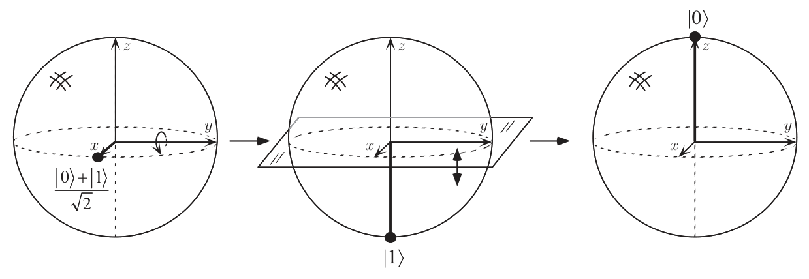
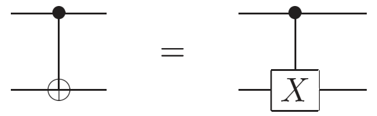
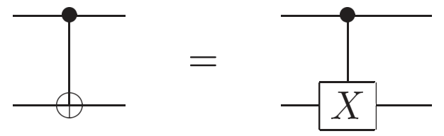

一些基本概念与前置知识
量子比特
叠加态
和经典比特只有0和1两种确定的状态不同，量子比特具有两种可能的状态——\(\ket 0\)和\(\ket 1\)，但只有当它被观测时，才能确定到底是哪种状态，其余时刻处于叠加态，也就是上面两种状态的线性组合： $$ \ket \psi = \alpha\ket 0 + \beta\ket 1 $$
其中\(\alpha\)和\(\beta\)都是复数（将其视为实数一般也不会有问题）
测量
当我们去测量某个比特时，会坍缩到一个确定的状态上——\(|\alpha|^2\)的概率为0，\(|\beta|^2\)的概率为1 $$ \begin{aligned} P(0) &= |\alpha|^2\\ P(1) &= |\beta|^2 \end{aligned} $$
显然，\(|\alpha|^2 + |\beta|^2 = 1\)。所以，量子比特可以用二维复向量空间中的单位向量表示
我们定义一个特殊的状态\(\ket +\)： $$ \ket + = \frac{1}{\sqrt 2} \ket 0 + \frac{1}{\sqrt 2} \ket 1 $$
显然，对于它而言，观测时0和1出现的概率都是50%
几何表示
通过欧拉公式，可以将上面的表达式转化为这样的形式（因为第一行括号外的系数不影响观测到的状态，所以可以省去）： $$ \begin{aligned} \ket\psi &= e^{\mathrm i\gamma} \left(\cos \frac \theta 2 \ket 0 + e^{\mathrm i \varphi}\sin \frac\theta 2\ket 1 \right)\\ &\Rightarrow\cos \frac\theta 2 \ket 0 + e^{\mathrm i \varphi}\sin \frac\theta 2 \ket 1 \end{aligned} $$
\(\theta\)和\(\varphi\)分别对应了布洛赫球面上与\(x\)轴和\(z\)轴的夹角
注意到，公式中的是\(\theta/2\)而非\(\theta\)，是因为正余弦函数中的角度取值范围实是\([0, \pi/2]\)，是一个半球壳。但为了方便处理，我们将其「拉升」为一个完整的球体
多量子比特
-
双量子比特
双量子比特具有4个基矢态：\(\ket{00}\)、\(\ket{01}\)、\(\ket{10}\)和\(\ket{11}\)。因此双量子比特的态向量为： $$ \ket \psi = \alpha_{00}\ket{00} + \alpha_{01}\ket{01} + \alpha_{10}\ket{10} + \alpha_{11}\ket{11} $$ 其中，\(\alpha\)称为振幅。测量得到某种状态的概率\(P\{x( = 00, 01, 10, 11)\} = |\alpha_x|^2\)，因此\(\sum_{x\in \{0,1\}^2}|\alpha_x|^2 = 1\)
测量第一个量子比特，会以\(|\alpha_{00}|^2 + |\alpha_{01}|^2\)的概率得到0；测量后该双量子比特的状态为： $$ \ket \psi' = \frac{\alpha_{00}\ket{00} + \alpha_{01}\ket{01}}{\sqrt{|\alpha_{00}|^2 + |\alpha_{01}|^2}} $$
-
贝尔态（EPR对）：第二个量子比特的测量结果总是与第一个相同，具有极强的相关性 $$ \frac{\ket{00} + \ket{11}}{\sqrt{2}} $$
-
\(n\)量子比特系统：基矢态可以表示为\(\ket{x_1x_2\dots x_n}\)，需要用\(2^n\)个振幅来描述
量子计算
单量子比特门
我们都知道，经典计算机是由线路和逻辑门构成的。线路负责传输电信号，而逻辑门的作用就是根据电信号的传入状态将其转换为对应的输出状态。
量子比特门也是如此，它的作用就是将量子比特的状态由一种转换为另一种。当然，因为量子比特并不是非0即1的，所以量子比特门的作用不是离散的，而是线性的。
-
量子非门：\(\alpha\ket0+\beta\ket 1\rightarrow \alpha\ket 1+\beta \ket 0\)
在这里，我们引入一种矩阵表示方式，我们将量子态\(\alpha \ket 0 + \beta \ket 1\)写为： $$ \begin{bmatrix} \alpha\\ \beta \end{bmatrix} $$
如此，量子非门就可以表示为： $$ \begin{aligned} X &\equiv \begin{bmatrix} 0&1\\ 1&0 \end{bmatrix}\\ \Rightarrow X\begin{bmatrix} \alpha\\ \beta \end{bmatrix} &=\begin{bmatrix} \beta\\ \alpha \end{bmatrix} \end{aligned} $$
因为量子态在经过量子门后依旧需要满足\(|\alpha'|^2 + |\beta'|^2 = 1\)的条件，由此可以推导出单量子门矩阵\(U\)需要满足条件\(U^\dagger U = I\)，即酋性条件（\(U^\dagger\)表示\(U\)的共轭转置，先对\(U\)进行转置，然后矩阵中的每个元素都取共轭）
- \(Z\)门：\(\ket 0\)不变，将\(\ket 1\)变为\(\ket{-1}\) $$ Z\equiv \begin{bmatrix} 1 & 0\\ 0 & -1 \end{bmatrix} $$
-
阿达玛门：将\(\ket 0\)变为\((\ket 0 + \ket 1)/\sqrt 2\)，\(\ket 1\)变为\((\ket 0 - \ket 1)/\sqrt 2\) $$ H\equiv\frac{1}{\sqrt 2}\begin{bmatrix} 1 & 1\\ 1 & -1 \end{bmatrix} $$
不难发现，一个量子比特经过两次\(H\)门的作用后会回到原来的状态。在布洛赫球面上，阿达玛操作相当于绕\(\hat y\)轴旋转\(90\degree\)，然后绕\(\hat x\)旋转\(180\degree\)（或者也可以描述为\((\hat{x} + \hat{y})/\sqrt 2\)旋转\(180\degree\)）

多量子比特门
这里我们可能需要温习一下双量子比特的内容。注意双量子比特不是两个单量子比特的拼接，它具有4种独立的基态\(\ket {00}, \ket{01}, \ket{10}, \ket{11}\)。双量子比特的矩阵表示是\(\begin{bmatrix}\alpha_{00}\ \alpha_{01}\ \alpha_{10}\ \alpha_{11} \end{bmatrix}^T\)，其中的4个\(\alpha\)就分别对应四种基态出现的可能。
这样，多量子比特门的矩阵表示也就不难理解了。矩阵表示虽然方便计算，但多少有些不够直观，我们不妨想象矩阵是下面这样一个电路，上方为输入，左边为输出；而每一列对应着一个基态，决定了这个基态对输出的影响方式
-
受控非门 CNOT：两个输入量子比特，控制量子比特和目标量子比特。控制量子比特为0时目标量子比特不变，控制量子比特为1时目标量子比特翻转
因此，受控非门的作用可以表示为\(\ket{A, B \oplus A}\)。即，控制量子比特与目标量子比特进行异或运算后，将结果存储到目标量子比特上
受控非门的矩阵表示如下： $$ U_\mathrm{CN} = \begin{bmatrix} 1 & 0 & 0 & 0\\ 0 & 1 & 0 & 0\\ 0 & 0 & 0 & 1\\ 0 & 0 & 1 & 0 \end{bmatrix} $$
和经典逻辑门不同，受控非门是一个酋量子门，也就是说，它是可逆的（可以根据输出确定输入，没有信息的损失）。此外，任何多量子比特逻辑门都可以由受控非门和单量子比特门组成
除计算基外的测量
之前我们提到，当我们对\(\alpha\ket 0 + \beta\ket 1\)进行测量时，我们有\(|\alpha|^2\)的概率得到0，\(|\beta|^2\)的概率得到1。显然，从单次观测中，我们并不能恢复出\(\alpha\)和\(\beta\)。事实上，量子力学允许不同种类的测量。
\(\ket 0\)和\(\ket 1\)只是量子比特基种可选的一种，我们还可以选择\(\ket + \equiv (\ket0 + \ket 1)/\sqrt 2\)和\(\ket - \equiv (\ket 0 - \ket 1)/\sqrt 2\)作为量子比特基： $$ \ket \psi = \alpha \ket 0 + \beta \ket 1 = \frac{\alpha + \beta}{\sqrt 2}\ket + + \frac{\alpha - \beta}{\sqrt 2}\ket - $$ 于是，我们就有了\(|\alpha + \beta|^2/2\)的概率得到\(\ket +\)，\(|\alpha - \beta|^2/2\)的概率得到\(\ket -\)
量子电路
一些约定
- 不允许环路：不允许从量子电路的一部分反馈到另一部分
- 不允许扇入操作：不允许连线汇合，因为这不是酋操作
- 不允许扇出操作：连线不能分叉，这样相当于是复制了一个量子比特，是不被量子力学所允许的
受控U门
单量子比特的控制位，\(n\)量子比特的目标位。如果控制位置0，目标量子比特不变；如果控制位置1，门\(U\)作用在目标量子比特上。
 

当\(U = X\)时，受控\(U\)门变为受控非门
测量
测量操作将单量子比特\(\ket \psi = \alpha \ket 0 + \beta \ket 1\)转化为一个经典比特\(M\)（用双线表示），以\(|\alpha|^2\)的概率得到0，\(|\beta|^2\)的概率得到1
量子交换
利用下面电路，我们可以实现两个量子比特位交换的效果
具体来说，两个量子比特经过上面电路后，所有计算基交换。假设输入\(\ket{\psi_1} = \alpha_1\ket a + \beta_1 \ket b\)和\(\ket{\psi_2} = \alpha_2 \ket a + \beta_2 \ket b\)两个量子比特，即，输入为\(\ket{\psi_1}\ket{\psi_2} = \alpha_1 \alpha_2 \ket{aa} + \alpha_1 \beta_2\ket{ab}+ \alpha_2 \beta_1 \ket{ba} + \beta_1 \beta_2\ket{bb}\)）；经过量子交换电路后，输出为\(\alpha_1 \alpha_2 \ket{aa} + \alpha_1 \beta_2\ket{ba}+ \alpha_2 \beta_1 \ket{ab} + \beta_1 \beta_2\ket{bb} = \ket{\psi_2}\ket{\psi_1}\)，是两个量子态的交换。 $$ \begin{aligned} \ket{a,b} &\to \ket{a, a\oplus b}\\ &\to \ket{a\oplus (a\oplus b), a\oplus b} = \ket{b, a\oplus b}\\ &\to \ket{b, (a\oplus b) \oplus b} = \ket{b,a} \end{aligned} $$
量子比特不可复制
量子力学的理论表明，量子比特不能复制。《量子计算与量子信息》一书中给出了一个尝试复制量子比特的例子：
在经典电路中，我们可以通过类似下面这样的电路实现对未知比特的复制（可以理解为一个受控非门，控制比特未知，目标比特给0，这样就实现了两个输出比特都是控制比特）。
这样的思路对量子比特似乎同样适用，但如果我们仔细观察，会发现并没有那么简单。我们试图复制未知状态\(\ket \psi = a\ket 0 + b\ket 1\)，则输出的量子比特为： $$ a\ket{00} + b\ket{11} $$
但事实上，\(\ket \psi\)复制的结果应该是： $$ \ket \psi \ket \psi = a^2\ket{00} + ab\ket{01} + ab\ket{10} + b^2\ket{11} $$
显然，上面的复制策略仅当\(ab=0\)时有效。
贝尔态
让第一个量子比特先经过一个阿达玛门，变为叠加态，然后作为控制比特输入受控非门，仅当控制位为1时目标翻转
这样的电路输出的态称为贝尔态（记为\(\beta\)）。下面是输入输出的对照： $$ \begin{aligned} \ket{00} &\mapsto (\ket{00} + \ket{11})/\sqrt{2}\equiv\ket{\beta_{00}}\\ \ket{01} &\mapsto (\ket{01} + \ket{10})/\sqrt{2}\equiv\ket{\beta_{01}}\\ \ket{10} &\mapsto (\ket{00} - \ket{11})/\sqrt{2}\equiv\ket{\beta_{10}}\\ \ket{11} &\mapsto (\ket{01} - \ket{10})/\sqrt{2}\equiv\ket{\beta_{11}} \end{aligned} $$
量子隐形传态
量⼦隐形传态是在发送⽅和接收⽅之间没有量⼦通信信道连接的情况下，进⾏量⼦态的传输。
假设A需要将一个单比特量子\(\ket \psi = \alpha\ket0 + \beta\ket 1\)的信息传给B。因为\(\ket\psi\)是连续的，所以需要无穷多的经典信息才能描述这个量子比特的状态。此时，假设A和B各拥有一个EPR对的一个量子比特，我们考虑如下步骤：
- 将\(\ket \psi\)和一个EPR对\(\ket{\beta_{00}}\)共同作为输入： $$ \begin{aligned} \ket{\psi_0} &= \ket \psi \ket{\beta_{00}}\\ &= \frac{1}{\sqrt{2}}[\alpha\ket 0(\ket{00} + \ket{11}) + \beta\ket 1(\ket{00} + \ket{11})] \end{aligned} $$ 假设前两个（\(\ket\psi\)和EPR对的第一个）量子比特属于A，第三个（EPR对的第二个）属于B
- A将他的两个量子比特传入一个受控非门（也就是说，\(\ket \psi\)作为控制比特，EPR对的第一个是目标比特），得到： $$ \ket{\psi_1} = \frac{1}{\sqrt 2}[\alpha\ket 0 (\ket{00} + \ket{11}) + \beta\ket 1 (\ket{10} + \ket{01})] $$
- 然后让第一个量子比特经过阿达玛门，得： $$ \ket{\psi_2} = \frac 1 2 [\alpha(\ket 0 + \ket 1)(\ket{00} + \ket{11}) + \beta(\ket 0 - \ket 1)(\ket{10} + \ket{01})] $$ 我们对其进行整理，将A和B的量子比特分开，得： $$ \begin{aligned} \ket{\psi_2} = \frac 1 2 &[\ket{00}(\alpha\ket 0+ \beta\ket 1) + \ket{01}(\alpha\ket 1 + \beta\ket 0)\\ &+ \ket{10}(\alpha\ket 0 - \beta\ket 1) + \ket{11}(\alpha\ket{1} - \beta\ket 0)] \end{aligned} $$
- A对属于他的两个量子比特进行测量，B的状态也随之确定： $$ \begin{aligned} 00& \mapsto \ket{\psi_3(00)}\equiv[\alpha\ket0 + \beta\ket1]\\ 01& \mapsto \ket{\psi_3(01)}\equiv[\alpha\ket1 + \beta\ket0]\\ 10& \mapsto \ket{\psi_3(10)}\equiv[\alpha\ket0 - \beta\ket1]\\ 11& \mapsto \ket{\psi_3(11)}\equiv[\alpha\ket1 - \beta\ket0] \end{aligned} $$ 这样，A只需要告诉B他的测量结果（只需要传递两个经典比特的信息），B就可以知道其量子比特处于何种状态
需要注意的是，量子隐形传态也不能超光速传递信息，因为如果A不将他的测量结果以经典信息传递给B，B就无法得到任何信息。而经典信息的传递是受限于光速的，所以量子隐形传态也无法超过光速
此外，量子隐形传态并没有真正复制量子态。虽然过程完成后目标量子比特处于状态\(\ket \psi\)，但这是依赖对第一个量子比特的测量的。即，第一个量子比特此时已经坍缩到\(\ket 0\)或\(\ket 1\)中了
量子算法
酋量子逻辑门是可逆的，但很多经典逻辑们是不可逆的，所以量子电路并不能用于直接模拟经典电路。但是，任何经典电路都可以用等价的仅含可逆原件的，由可逆门Toffoli门构成的电路代替。
Toffoli门
Toffoli门有两个控制比特、一个目标比特。和受控非门类似，当两个控制比特都为1时目标比特翻转，否则不变。即\((a,b,c)\to (a, b, c\oplus ab)\)。不难发现，Toffoli门是一个可逆门，它的逆就是自身（即，经过两次Toffoli门后会得到原先的输入，\((a,b,c)\to(a,b,c,\oplus ab)\to (a,b,c)\)）。
Toffoli的电路表示为：
矩阵表示为： $$ \begin{bmatrix} 1 & 0 & 0 & 0 & 0 & 0\\ 0 & 1 & 0 & 0 & 0 & 0\\ 0 & 0 & 1 & 0 & 0 & 0\\ 0 & 0 & 0 & 1 & 0 & 0\\ 0 & 0 & 0 & 0 & 0 & 1\\ 0 & 0 & 0 & 0 & 1 & 0 \end{bmatrix} $$ 下面，我们给出两个Toffoli门实现对经典逻辑门的模拟的案例：
- 与非门 NAND：目标比特置1，得到的输出为\(1\oplus ab = \neg(ab)\)
- 扇出：一个控制比特置1，目标比特置0，得到输出为\((1, a, 0)\to(1, a, a \oplus 0) = (1, a, a)\)